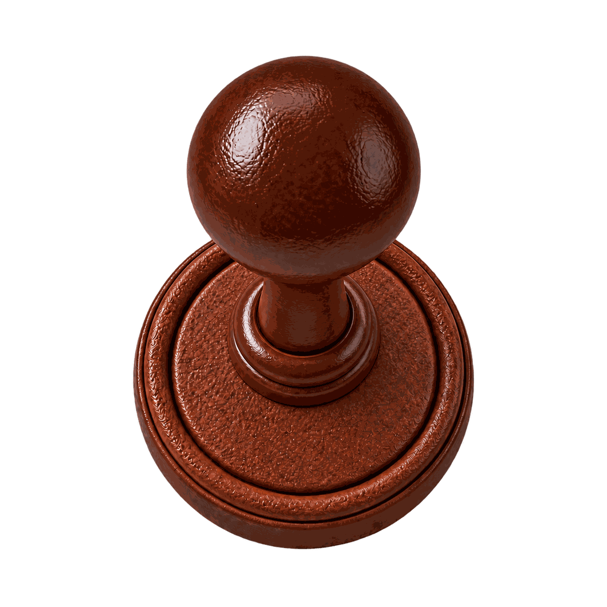

A TASTE OF YOUR JOURNEY
여행에는 저마다의
여행에는 저마다의
맛이 있으니까.
사진 1–3장을 골라 주세요.
그날의 온도와 리듬을 쿠키로 구워드릴게요.
YOUR CRUMBS, YOUR FLAVOR
어떤 여행이었나요?
얼굴이 선명하지 않아도 괜찮아요.
풍경, 음식, 뒷모습까지 모두 재료가 돼요.
여행의 기억을
한 겹씩 올려볼까요?
각 레이어에서 하나를 고르거나 직접 적어주세요.
객관식과 직접 쓴 문장이 함께 있으면 직접 쓴 이야기를 우선해 결을 판단해요. 민감한 개인정보는 적지 말아주세요.
사진은 기기 밖으로 전송되지 않아요. 직접 쓴 문장만 레이어 분류에 사용돼요.



여행을 쿠키로 굽는 중
사진에서 여행의 재료를 찾는 중...
YOUR TRAVEL FLAVOR IS
YOUR 4 LAYER RECIPE
YOUR JOURNEY
Mango Soda
햇살을 발견하면 망설임 없이 뛰어드는 맛

이 사진들로 구웠어요.
로스앤젤레스에서 보낸 시간
사진에서 직접 읽은 색의 비율
그날의 여행을 천천히 떠올려 봤어요.
SAVED IN YOUR JAR
오늘의 맛을
오늘의 맛을
담아두었어요.
여행의 기억은 사라지지 않고
나만의 취향으로 차곡차곡 쌓여요.

여행의 맛을 찾는 건,
Cookie:Ro의 시작이에요.
Cookie:Ro는 흩어진 여행 사진을 모아 장소와 순간별로 정리하고, 나만의 여행 이야기 Crumbook으로 만들어 오래도록 다시 꺼내볼 수 있게 하는 여행 메모리 서비스예요.
- CRUMBS흩어진
여행 사진 - CRUMBOOK사진이 한 권의
여행 이야기로 - FLAVOR그 여행만의
맛을 발견하고 - COOKIE JAR여행 기억을
차곡차곡 보관해요
A FLAVOR FROM YOUR FRIEND
Mango Soda 맛 친구가
함께 비교해 보고 싶대요.
내 여행은
어떤 맛일까?
여행 정보와 사진을 골라 두 사람의 케미를 확인해요.
같은 여행,
서로 다른 맛.
사진에서 직접 읽은 색의 비율
여행의 맛을 찾는 건,
Cookie:Ro의 시작이에요.
흩어진 여행 사진은 Crumbook으로 엮이고, 그 여행의 Flavor와 함께 Cookie Jar에 오래 보관돼요.
- CRUMBS여행 사진
- CRUMBOOK여행 이야기
- FLAVOR여행의 맛
- COOKIE JAR기억 보관
여행을 닮은
다섯 가지 맛.